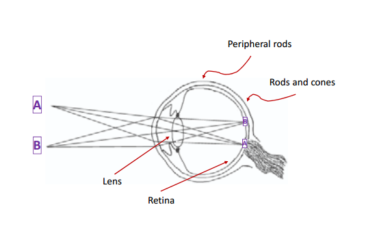
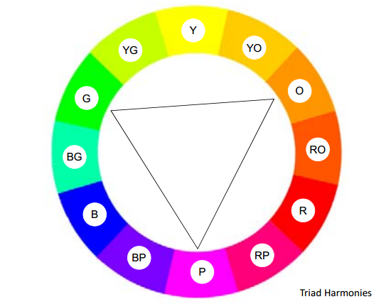

What's the Colour?
Color or colour (see spelling differences) is the visual perceptual property corresponding in humans to the categories called red, blue, yellow, green and others. Color derives from the spectrum of light (distribution of light power versus wavelength) interacting in the eye with the spectral sensitivities of the light receptors. Color categories and physical specifications of color are also associated with objects or materials based on their physical properties such as light absorption, reflection, or emission spectra. By defining a color space, colors can be identified numerically by their coordinates.

Neutral Colors And Chromatic Colours
Black is the darkest possible color and White is the lightest possible color. Mixing black and white in varying proportions produces a range of greys. All the greys together with black and white are called neutral colors.
Chromatic colors are all the color other than the neutral colors. Chromatic colors consist of three components.

Hue, Brightness And Saturation
Hue is what we often refer to as the color. Primary hues are the basic hues from which other hues can be made.
- - paining: red, blue, yellow
- - light: red, green, blue
Secondary hues are created by mixing 2 primary hues.
- - paining: purple(r, b), green(b, y), orange(y, r)
- - light:, yellow(r, g), cyan(b, g), magenta (b, r)
Brightness or value of a color is changed by adding white to increase the brightness or black to reduce the brightness. Remember that brightness is changed by adding white or black but not both.
- - white to increase brightness
- - black to reduce brightness
Saturation or chroma of a color is reduce by adding grey.
- - fully saturated color (vivid) have no grey.
- - unsaturated colors (muddy or dull) have more grey.
- - desaturated colors (grey scale) have no saturation.
Color Model, HSB Model And RGB Model
Color models have been developed to show the relationships between colors. Newton devised the first color model.

HSB model: The Hue, Saturation and Brightness (HSB) model best resembles how we describe color. HSB is based on Allbert Munsell's well known color tree or color sphere.
RGB model: is used by all the digital technology such as computer screen, digital camera, scanner, etc., nearly 17 milion color can be represented. RGB model is device dependant and each display screen will show the same RGB colorslightly differently. Older systems and web browsers support only a limited set of colors, only 256 colors are considered browser safe.
The Psychology Of Color
All color produce emotional and behavioural effects.
There is no single unified psychological response to specific color. Most are based on individual experiences. Many cultures differ in their association of meaning with different colors. Despite this , it is important to understand the emotional attributes of the main color groups
Color Emotional Table
Despite this , it is important to understand the emotional attributes of the main colour groups.

Color Harmony
Color harmony can be defined as selecting sucessful color combinations.
- Anology vs contrast
Color harmony can be achieved by
- - adromatic harmony (select difference neutral color grey scale plus black and white)
- - monochromatic harmony (selecting different brightness and saturation of the same hue)
- - anologous harmony (selecting different hue, color to one another on the color wheel)
- - comlementary harmony (selecting different hue, opposite to one another on the color wheel